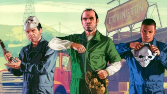

Estos son los 20 peores videojuegos de la historia según Metacritic
A todos nos gusta hacer listas y repasar cuáles son nuestros videojuegos favoritos. Sin embargo, habitualmente olvidamos esos nombres que nos producen pesadillas y rara vez elaboramos una con los títulos que menos nos han gustado. Esos que tratamos de olvidar y que no queremos volver a ver nunca más. Los gustos están formados por mil y un aspectos subjetivos, aunque hay veces en las que ni la opinión más personal puede tapar defectos tan evidentes.
Cuando hablamos de videojuegos malos hay nombres que salen rápidamente a la palestra como Super Man 64 o John Romero's Daikatana, entre otros. Sin embargo, según la nota media de Metacritic están muy lejos de ser considerados los peores. Tampoco lo está el reciente Warcraft III: Reforged a pesar de las críticas recibidas durante estos días. ¿Queréis saber cuáles son los peores? Acompañadnos en este repaso a los títulos peor valorados en Metacritic.
¿Qué es el "modo juego" en las TV y pantallas y cómo de útil te puede resultar si eres gamer?
Si eres uno de esos usuarios a los que les gusta trastear sus dispositivos para jugar lo mejor posible; al llegar a tu televisor es probable que te hayas encontrado con el "modo de juego" y teniendo ese nombre, la hayas activado. Esta opción tan enigmática encapsula lo que el fabricante identifica como la mejor configuración posible para jugar en su pantalla; pero sabemos que no todos los videojuegos son iguales. No buscamos los mismos ajustes en un título singleplayer como Disco Elysium, que en otro como Fortnite; con un corte más competitivo. Por esta razón, queremos explicaros qué hace esta configuración y si es verdaderamente interesante.
The Witcher en Netflix concreta el reparto de su segunda temporada y Mark Hamill se queda fuera
En el marco del rodaje de la Temporada 2 de The Witcher, la rama de fantasía y ciencia ficción de Netflix, NX, reveló hoy parte del reparto debutante que aparecerá en la continuación de la historia de Geralt de Rivia, donde figura Kristofer Hivju, veterano de Juego de Tronos, como Nivellen.
"El Continente se hizo un poco más grande, aquí está el nuevo reparto para The Witcher, Temporada 2:
- Yasen Atour como Coen
- Agnes Bjorn como Vereena
- Paul Bullion como Lambert
- Kristofer Hivju como Nivellen
- Thue Ersted Rasmussen como Eskel
- Aisha Fabienne Ross como Lydia
- Mecia Simson como Francesca"
Call of Duty Modern Warfare añade una animación de desmembramiento no apta para ojos sensibles
Tras los rumores de lo que podría ser un modo Battle Royale para Call Of Duty: Modern Warfare y todas las novedades que nos ha ofrecido la Segunda Temporada del juego de Activision ahora nos llega una sangrienta animación incluída en la nueva actualización del título.
Se trata de un desmembramiento brutal producido al disparar en la cabeza a un enemigo, tal y como podemos ver en la cinemática que ha subido la cuenta de noticias Call of Duty News:
Una animación gore que muestra la descuartización de la cabeza del otro jugador al recibir un disparo, algo no muy habitual a lo que estamos acostumbrados a ver en todas las entregas de la saga de CoD.
GTA V y Red Dead Redemption 2 celebran un nuevo récord ¡y Rockstar lo celebra con contenidos gratis!

Puede que Rockstar Games solo haya publicado dos juegos en toda la década pasada, pero nadie puede dudar de la rentabilidad de sus títulos. En un comunicado de prensa de Take-Two, la compañía ha presumido de cifras con los últimos resultados de ventas de Grand Theft Auto V y Red Dead Redemption 2, los cuales suman 150 millones de unidades vendidas en todo el mundo.
Según señala la compañía, las ventas de GTA V y Red Dead Redemption 2 suman más de 150 millones de unidades a escala global, una cifra de auténtico escándalo pero no por ello inesperada, si tenemos en cuenta que GTA V superaba por sí solo los 100 millones a finales de 2018.
En este sentido, Take-Two remarca que GTA V ha sido también el juego más vendido de toda la década en base a los datos del NDP Group, algo que ya adelantaban los analistas al hablar sobre los juegos más vendidos de la década pasada. No en vano, el título de mundo abierto fue uno de los juegos digitales más rentables de 2019 seis años después de su lanzamiento.